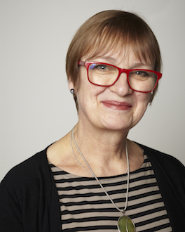
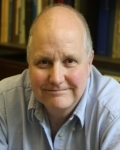

イベント・シンポジウム
第1回シンポジウム(「創造的生活者シンポジウム」2014年7月11日・於 明治大学)
※終了しました
第２回 ファブ地球社会／創造的生活者シンポジウム
「いま、わたしたちに必要なオープンイノベーションとは」
開催趣旨
社会の成熟化や高齢化に伴い、生活者ニーズの多様化が進んでいる現在の日本社会においては、要望にきめ細かく即時的に対応できる「デジタルものづくり」の活用や、ネットワークを通じたものづくり設計図の共有、共通の課題解決を指向するコミュニティの醸成について広く考えていく必要があります。
本シンポジウムでは、デジタルものづくり分野における人々の感性の発揮や、多様な現場への3Dプリンタの導入、産業と文化を越境した「ものづくりコミュニティ」の登場などをテーマとしながら、市民・大学・企業・政府にとっての今後の取り組みについて論じます。
検討にあたっては、日本で産学連携・大学横断のオープンイノベーションに取り組む第一線の研究者に加えて、国内外でインクルーシブ・デザインの先端を切り拓くジュリア・カシム氏、オープンソース3DプリンターRepRapの生みの親であるエイドリアン・ボイヤー氏、3DプリンタのためのデータプラットフォームShapewaysの顧問弁護士であり、オープンソース・ハードウェア協会の理事長でもあるマイケル・ワインバーグ氏と、国際的な視野を得る上で示唆に富む登壇者を迎えます。
人間の感性に関する新たな知見、デジタルものづくりの未来形、新たなコミュニティから生まれる共創(コ・クリエーション)価値に関心をお持ちのみなさまの幅広い参加をお待ちしています。
開催概要
| 正式名称 | 第２回 ファブ地球社会／創造的生活者シンポジウム |
| 主催 | 感性とデジタル製造を直結し、生活者の創造性を拡張するファブ地球社会創造拠点（文部科学省Center of Innovationプログラム） |
| 日時 | 2016年3月5日（土）| 10:00-12:00（研究展示) | 13:00-17:30（シンポジウム） |
| 場所 | 慶應義塾大学三田キャンパス |
| 会場 | 調整中 |
| 参加 | 参加費無料 | オンラインによる事前登録制 (事前登録者には同時通訳レシーバーを配布) ※当日参加も可能です。 |
登壇者(予定)
招待講演
ジュリア・カシム（京都工芸繊維大学）
エイドリアン・ボイヤー（RepRap Ltd）
マイケル・ワインバーグ（Shapeways, Inc.）
研究報告・ディスカッション
松原健二（株式会社 ロングフェロー/COIプロジェクトリーダー）
村井純（慶應義塾大学/COI研究リーダー）
長田典子（関西学院大学）
荒川薫（明治大学)
江渡浩一郎（産業技術総合研究所）
古川英光（山形大学）
田中浩也（慶應義塾大学）
小林茂（情報科学芸術大学院大学）
渡辺智暁（慶應義塾大学）
登壇者プロフィール
ジュリア・カセム（京都工芸繊維大学KYOTOデザインLab教授） Dip.AD, MPhil, FRCA, FRSA
(photo: Petr Krejci)
http://kyoto-design-lab.tumblr.com/
ロイヤル・カレッジ・オブ・アート、ヘレン・ハムリン・センター・フォー・デザイン客員シニア研究員。ジュリア・カセム氏のキャリアはアート、デザイン、ミュージアム研究、社会運動の諸領域を横断する。
彼女はマンチェスター・カレッジ・オブ・アート・アンド・デザインでファイン・アートを学び、日本政府の奨学金を得て東京大学でファイン・アーツと音楽を学んだ。英国のニューキャッスル大学の国際ヘリテージ研究センターから哲学修士号を得、ロイヤル・カレッジ・オブ・アートおよびロイヤル・ソサエティ・オブ・アーツ（RSA）のフェローを務めている。世界中で多くの著作を出版しており、インクルーシブ・デザインの国際的な権威である。氏が組織する24時間・48時間インクルーシブ・デザイン・チャレンジは世界の21都市で開催され、800人以上のデザイナーからの参加を得ている。
ボスニア、クロアチア、マケドニア旧ユーゴスラビア共和国で実施した近年のプロジェクトのひとつは、ザグレブのD Dayで2011年グランプリを獲得し、2012年クロアチア・デザイン・ビエンナーレおよびクロアチアの開発と創造性のネットワークであるMrak協会の審査員賞を得た。このプロジェクトは2013年1月のブリティッシュ・カウンシルのロンドン本部での展示の題材ともなった。
2014年5月、氏は京都工芸繊維大学の教授に任命され、KYOTOデザインLabの発足の任を担った。同センターは産業界、公共セクター、そのほかの国内外のパートナーとのコラボレーションを通じた学際的デザイン・イノベーションのためのものである。氏はデザイン・ウィーク誌の選定する2010にデザインの世界に最も影響を与えた人々のリスト「ホットな50人」に含まれた。
ジャパン・タイムスのアーツ・コラムニストとして、アート、デザイン、ミュージアム文化について執筆多数。視覚障害のある人々のための展覧会のキュレ―ションやデザインを手がけ、賞も獲得している。また、ミュージアムの所蔵品への認知的・物理的アクセスを向上することを目的として、非営利組織「アクセス・ビジョン」を立ち上げた。
1998年にUKに戻り、2000年にはロイヤル・カレッジ・オブ・アートのヘレン・ハムリンセンターに参画、チャレンジ・ワークショップのプログラムを創設した。この先駆的で影響力のあるプログラムはインクルーシブ・デザインを扱うもので、キャリアの様々な段階にあるプロフェッショナルのデザイナーを、障害を持つ人々や高齢者と引き合わせ、対等で互いに恩恵を受ける共同デザイン（co-design）プロセスに参加させる/ものである。
彼女は、英国内外の別の文脈へこのプログラムのモデルを拡張させた。拡張したプログラムによる成果物の展示会は、2010年にロンドンのヴィクトリア＆アルバート博物館で開催された。
彼女は上海の同済大学、エルサレムのハダーサ学術大学の客員教授、RCAの客員フェロー、ロンドンの科学博物館、自然史博物館の顧問を務めている。
エイドリアン・ボイヤー（RepRap Ltd)

私が最初に機械工学の学位を取得したのは、インペリアルカレッジで1973年のことです。その後トライポロジー（摩擦学）のPh.Dを取得しました。
1977年にはバース大学の数理学部に移籍し、確率論的計算幾何学の研究に取り組みました。
その後、バース大学でマイクロプロセッサユニット長を数年間務めました。このユニットは、現在のバース大学コンピューティングサービスにあたるものです。
1984年には、バース大学の機械工学部で製造について講師となり、のちに上級講師に昇進しました。RepRapプロジェクトと後述するRepRapPro Ltdに集中するため、バース大学の職を2012年に退職することにしました。
私の専門領域は、幾何学的モデリングと基礎的な幾何学的コンピューティング（ちなみに私は、ボロノイ図のボウヤー・ワトソンアルゴリズムの創作者の１人です）、製造のためのコンピューターアプリケーション、そしてバイオミメティックスと呼ばれる生物学の工学への応用です。バイオミメティックスでは、工学分野における自己複製および自己組立に取り組んでいます。
私は世界中のRepRapプロジェクトの創始者です。RepRapプロジェクトは、人類史上初めて、自己複製する汎用製造マシンを制作したプロジェクトです。同時に私はRepRapキットとRepRapの関連製品やサービスを販売するために設立したRepRapPro Ltdのファウンダーとディレクターでもあります。
1952年ロンドン生まれで、妻と娘が１人います。
マイケル・ワインバーグ（Shapeways, Inc.）
マイケル・ワインバーグ氏はShapeways社の最高法務責任者、知的財産法務顧問です。
ワインバーグ氏は「もし彼らが台無しにしてしまうのでなければ、素晴らしいこと：3Dプリンティング、知的財産、そして次世代の素晴らしく破壊的なテクノロジーをめぐる戦い (It Will Be Awesome If They Don’t Screw It Up: 3D Printing, Intellectual Property, and the Fight Over the Next Great Disruptive Technology) (2010)」や、「著作権と3Dプリンティングはどうなってるの？(What's the Deal with Copyright and 3D Printing?) (2013)」、「あなたの3Dプリント物のライセンスのための3つのステップ (3 Steps for Licensing Your 3D Printed Stuff) (2015)」といった３Dプリンティングと知的財産権が交わる実務領域でのホワイトペーパーの執筆者です。ワシントンDCで3D/DCという、３Dプリンティングに関する政策イベントを定期的に開催しています。
氏はメディア上や公開イベントにおいて、頻繁に３Dプリンティングにおける法と政策の問題について議論しています。彼はまたオープンソースハードウェア協会の理事長でもあります。